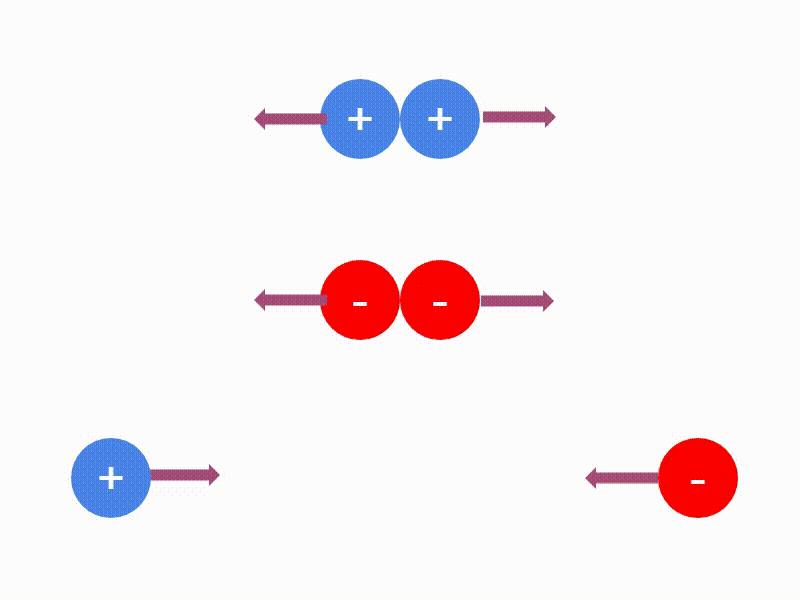
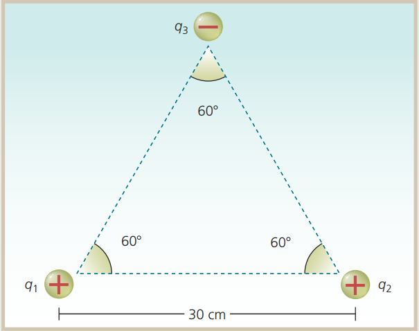
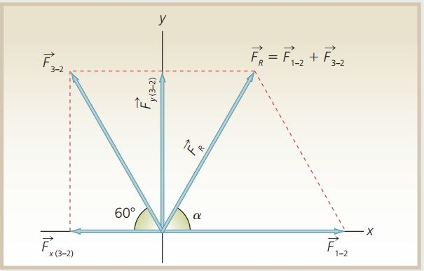

En esta sección iniciaremos el estudio de otra de las ramas de la Física, la electricidad.
La electricidad es la rama de la Física que estudia los fenómenos producidos por la presencia y el flujo de cargas eléctricas.
La palabra electricidad proviene del vocablo griego elektron, que significa ámbar, una resina fosilizada que se carga eléctricamente cuando se frota con una tela o una piel.
La electricidad se divide en dos ramas la electrostática y la electrodinámica.
Electrostática. Es la rama de la electricidad que se encarga del estudio de las cargas eléctricas en reposo.
Electrodinámica. Es la rama de la electricidad que se encarga del estudio de las cargas eléctricas en movimiento.
Comenzaremos describiendo las propiedades básicas de las cargas eléctricas y la fuerza eléctrica existente entre ellas que, a diferencia de la gravedad, puede ser de atracción o de repulsión, es decir la electrostática (electricidad estática).
Toda la materia, es decir, cualquier tipo de cuerpo, se compone de átomos y éstos de partículas elementales como los electrones, protones y neutrones.
La carga eléctrica es una propiedad física intrínseca de algunas partículas subatómicas que se manifiesta mediante fuerzas de atracción y repulsión entre ellas
Los neutrones son eléctricamente neutros porque carecen de carga.
Los electrones poseen una carga eléctrica negativa (-).
Los protones tienen carga eléctrica positiva (+).
Por lo tanto tendremos solo dos tipos de carga:
Carga positiva (+)
Carga negativa (-)
Los átomos de cualquier elemento químico son eléctricamente neutros, ya que tienen el mismo número de protones o cargas positivas y de electrones o cargas negativas. Sin embargo, un átomo puede ganar electrones y quedar con carga negativa, o bien, perderlos y adquirir carga positiva. Por tanto, la carga de un electrón neutraliza la de un protón.
Toda la materia en estado natural, es eléctricamente neutra porque tiene la misma cantidad de carga eléctrica positiva que negativa.
La transferencia y la interacción entre las cargas producen los fenómenos eléctricos. Esta interacción responde a la ley de signos; según la cual, los cuerpos que tienen carga eléctrica del mismo signo se repelen y los cuerpos que tienen cargas de diferente signo se atraen.
Primera ley de la electrostática. Las cargas del mismo signo se repelen y las cargas de signo contrario se atraen.
Se puede observar que entre las cargas eléctricas surgen fuerzas de atracción o de repulsión.

Formas de electrizar un cuerpoElectrización. Es el proceso de cargar eléctricamente un cuerpo, ya sea añadiéndole o quitándole electrones.
Los cuerpos se electrizan al perder o ganar electrones.
▶ Si un cuerpo tiene carga negativa es porque ha ganado electrones de otros cuerpos y, por tanto, posee más electrones que protones.
▶ Si un cuerpo tiene carga positiva es porque ha cedido electrones a otros cuerpos y, por tanto, posee menos electrones que protones.
Por tanto, debemos entender que la carga de un cuerpo es positiva si pierde electrones y negativa, cuando los gana.
Debido a que solo los electrones se pueden mover de un átomo a otro, solo las cargas negativas se transfieren de un cuerpo a otro.
Métodos de electrización
A) Frotamiento. Consiste en frotar dos cuerpos, con lo cual los electrones de uno de ellos pasan al otro.
B) Contacto. Al poner en contacto un cuerpo electrizado con otro sin carga eléctrica, se genera un paso de electrones entre el primer cuerpo y el segundo, produciéndose la electrización de este último. O también si un cuerpo carente de electrones, o con carga positiva, se pone en contacto con otro, atraerá parte de los electrones de dicho cuerpo.
C) Inducción. Esta forma de electrización se presenta cuando un cuerpo neutro se acerca a otro ya electrizado. Al aproximar un cuerpo cargado a otro cuerpo, preferiblemente conductor, que no está cargado, este cuerpo se polariza, es decir, una de sus partes se carga positivamente y la otra, negativamente. El fenómeno se debe a que el cuerpo cargado atrae las cargas de distinto signo y repele a las del mismo signo. Cuando el cuerpo electrizado se aleja, la carga inducida desaparece.
Ley de conservación de la carga
Ley de conservación de la carga. La carga eléctrica total de un sistema aislado se conserva.
Este principio indica que la cantidad de carga eléctrica en un sistema aislado es constante, es decir, se conserva, ya que puede presentarse un intercambio o movimiento de carga de un cuerpo a otro, pero no se crea ni se destruye.
Materiales conductores y aislantes.Los materiales conductores de electricidad son aquellos que se electrizan en toda su superficie, aunque sólo se frote un punto de la misma. Ejemplos: todos los metales, soluciones de ácidos, bases y sales disueltas en agua, así como el cuerpo humano.
Los materiales aislantes o malos conductores de electricidad, también llamados dieléctricos, sólo se electrizan en los puntos donde hacen contacto con un cuerpo cargado, o bien, en la parte frotada. Ejemplos: la madera, el vidrio, el caucho, las resinas y los plásticos, la porcelana, la seda, la mica y el papel.
Cabe mencionar que no hay un material 100% conductor ni un material 100% aislante.
Los semiconductores, que constituyen la base de la electrónica moderna, pueden cambiar de aislante a conductor y de vuelta a aislante. Se utilizan en la construcción de transistores y son de gran importancia en la electrónica. Ejemplos: el carbón, germanio y silicio contaminados con otros elementos, y los gases húmedos.
Los superconductores, por su parte, son materiales que se convierten en conductores perfectos a bajas temperaturas, cerca de los -273 °C, ofrecen una resistencia casi nula al movimiento de las cargas eléctricas.
Unidad de carga eléctricaA las cargas eléctricas las representaremos con la letra \(q\).
Como ya señalamos, un cuerpo tiene carga negativa si tiene exceso de electrones, y carga positiva si tiene carencia o déficit de ellos.
Por tal motivo, la unidad elemental para medir carga eléctrica es el electrón, pero como es una unidad muy pequeña se utilizan unidades prácticas de acuerdo con el sistema de unidades empleado.
En el Sistema Internacional (SI) se utiliza el coulomb (C).
Un coulomb. Es la carga eléctrica que, situada a 1 metro de otra de igual magnitud y signo, la repele con una fuerza de 9 × 109 N.
Un coulomb representa la carga eléctrica que tienen 6 trillones 250 mil billones de electrones, es decir:
1 coulomb (culombio) = 1 C = 6.25 × 1018 electrones
Por tanto, si un cuerpo tuviera una carga negativa de un coulomb, significaría que tiene un exceso de 6.25 × 1018 electrones; o una carencia de igual cantidad de electrones, si su carga fuera positiva. El coulomb es una unidad de carga eléctrica muy grande, por lo cual es común utilizar submúltiplos, como
el milicoulomb (mC = 1 × 10-3 C),
el microcoulomb (µC = 1 × 10-6 C),
el nanocoulomb (nC = 1 × 10-9 C),
el picocoulomb (pC = 1 x 10-12 C).
La carga de un electrón y un protón expresada en coulombs es la siguiente:
1 electrón: qe = -1.6 × 10-19 C
1 protón: qp = 1.6 × 10-19 C
Ley de CoulombYa se mencionó, que las cargas eléctricas se atraen si tienen signo diferente, mientras que si tienen el mismo signo se repelen. Lo cual nos da una idea de la existencia de fuerzas entre dichas cargas eléctricas.
Una carga eléctrica 1 ejerce una fuerza (de atracción o de repulsión) sobre otra carga eléctrica 2, pero al mismo tiempo la carga eléctrica 2 ejerce una fuerza del mismo tipo sobre la carga eléctrica 1 pero de sentido contrario.
El físico francés Charles Coulomb, utilizando una balanza de torsión, estudió las fuerzas con las que se atraían o repelían los cuerpos cargados. Estas fueron sus conclusiones:
▶ Las fuerzas eléctricas aparecen sobre cada una de las dos cargas que interactúan, y son de igual magnitud e igual línea de acción, pero de sentidos opuestos.
▶ Las fuerzas eléctricas dependen de los valores de las cargas. Cuanto mayor sean esos valores, mayor será la fuerza con la que se atraen o repelen.
▶ Las fuerzas eléctricas dependen de la distancia que separa las cargas: cuanto mayor sea esa distancia, menor será la fuerza entre ellas.
▶ Las fuerzas eléctricas dependen del medio en el que están situadas las cargas. No es igual la fuerza entre dos cargas cuando están en el vacío que cuando están en otro medio material, como el aceite o el agua.
De lo anterior Coulomb concluyó:
Ley de Coulomb. La magnitud de la fuerza eléctrica de atracción o de repulsión entre dos cargas puntuales, q1 y q2, es directamente proporcional al producto de las cargas e inversamente proporcional al cuadrado de la distancia d que las separa.
Matemáticamente será
\(\displaystyle \vec {F}=k\cdot \left(\frac{{q}_{1}\cdot {q}_{2}}{{d}^{2}}\right) \)
Donde:
F – Es la fuerza de atracción o repulsión entre las cargas en newtons (N)
q1, q2 – Son las cargas 1 y 2 en coulombs (C)
d – Es la distancia entre las cargas en metros (m)
k – Es la constante de proporcionalidad
La constante de proporcionalidad en el vacío es
\( k=8.99\times {10}^{9}\,\frac {N\cdot {m}^{2}}{{C}^{2}}\)
Notas:
Si la fuerza calculada tiene signo negativo, la fuerza es de atracción.
Si la fuerza calculada tiene signo positivo, la fuerza es de repulsión.
Si entre las cargas existe una sustancia o medio aislante, la magnitud de la fuerza eléctrica de interacción en éstas sufrirá una disminución dependiendo del medio. Para el caso en el que el medio en que se encuentran las cargas sea diferente al vacío utilizamos la constante dieléctrica del material.
Siendo
\(\displaystyle k_{material}=\frac{{k}_{vacío}}{{k}_{d\,material}}
\)
Donde kd es la constante dieléctrica y para algunos materiales se dan en la siguiente tabla.
Un valor negativo de la fuerza indica que las cargas son de signo diferente, y por lo tanto la fuerza es de atracción.
Un valor positivo de la fuerza indica que las cargas son del mismo signo, y por lo tanto la fuerza es de repulsión.
Ejemplo 1. Determinar la magnitud de la fuerza eléctrica entre dos cargas cuyos valores son: q1 = -6 microcoulombs, q2 = 7 microcoulombs, al estar separadas en el vacío por una distancia de 35 cm.
Datos
q1 = -6 µC = -6 x 10-6 C
q2 = 7 µC = 7 x 10-6 C
d = 35 cm = 0.35 m
F = ?
Fórmula
\(\displaystyle \vec {F}=k\cdot \left(\frac{{q}_{1}\cdot {q}_{2}}{{d}^{2}}\right) \)
Sustitución
\(\displaystyle \vec {F}=\left(8.99\times {10}^{9}\,\frac {N\cdot {m}^{2}}{{C}^{2}}\right)\cdot \left[\frac{(-6\times{10}^{-6}\,C )\cdot
(7\times{10}^{-6}\,C )}{{(0.35\,m)}^{2}}\right] \)
Resultado
\(\vec F = -3.09\, N\) La fuerza es de atracción ya que las cargas son de diferente signo
Ejemplo 2. Una carga de -5 nanocoulombs se encuentra en el aire a 0.2 m de otra carga de -7 nanocoulombs.
a) ¿Cuál es la magnitud de la fuerza eléctrica entre ellas?
b) ¿Cuál sería la magnitud de la fuerza eléctrica entre ellas si estuvieran sumergidas en aceite?
Datos
q1 = -5 nC = -5 x 10-9 C
q2 = -7 nC = -7 x 10-9 C
d = 0.2 m
Faire = ?
Faceite = ?
Fórmula
\(\displaystyle \vec {F}_{aire}=k\cdot \left(\frac{{q}_{1}\cdot {q}_{2}}{{d}^{2}}\right) \)
Sustitución
\(\displaystyle \vec {F}_{aire}=\left(8.99\times {10}^{9}\,\frac {N\cdot {m}^{2}}{{C}^{2}}\right)\cdot \left[\frac{(-5\times{10}^{-9}\,C )\cdot
(-7\times{10}^{-9}\,C )}{{(0.2\,m)}^{2}}\right] \)
Resultado
\(\vec F_{aire} = 7.87\, N \) La fuerza es de repulsión ya que las cargas son del mismo signo
Cuando se encuentran en aceite
\(\displaystyle k_{aceite}=\frac{{k}_{vacío}}{{k}_{d\,aceite}} \)
De la tabla de constantes dieléctricas tenemos para el aceite que kd aceite = 2.80
\(\displaystyle {k}_{aceite}=\frac{8.99\times {10}^{9}\frac{N{m}^{2}}{{C}^{2}}}{2.80} \)
\( {k}_{aceite}=3.21\times {10}^{9}\frac{N{m}^{2}}{{C}^{2}}\)
\(\displaystyle \vec {F}_{aceite}={k}_{aceite}\cdot \left(\frac{{q}_{1}\cdot {q}_{2}}{{d}^{2}}\right)\)
\(\displaystyle \vec{F}_{aceite}=
\left(3.21\times {10}^{9}\cdot \frac{N{m}^{2}}{{C}^{2}}\right)\cdot \left[\frac{\left(5\times {10}^{-6}\,C\right)\left(7\times {10}^{-6}\,C\right)}{{\left(0.2\,m\right)}^{2}}\right]\)
\(\vec F_{aceite} = 2.81\, N\) La fuerza es de repulsión ya que las cargas son del mismo signo
Ejemplo 3. Tres cargas cuyos valores son: q1 = 3 µC, q2 = 3 µC y q3 = -3 µC, están colocadas en los vértices de un triángulo equilátero que mide 30 cm en cada uno de sus lados, como se ve en la figura.
Determine la magnitud de la fuerza resultante sobre la carga q2, así como el ángulo α que forma respecto al eje horizontal.

Datos
q1 = 3 µC = 3 x 10-9 C
q2 = 3 µC = 3 x 10-9 C
q3 = -3 µC = -3 x 10-9 C
d = 30 cm = 0.30 m
\(\vec R\) = ?
\(\alpha\) = ?
La carga q2 se encuentra sujeta a dos fuerzas eléctricas, una de repulsión F1-2 resultado de q1 y otra de atracción F3-2 debida a q3, como se ve en el siguiente diagrama de fuerzas eléctricas:

Cálculo de la magnitud de la fuerza eléctrica F1-2 y F3-2
\(\displaystyle \vec{F}_{(1-2)}=\frac{\left(8.99\times {10}^{9}\frac{N{m}^{2}}{{C}^{2}}\right)\left(3\times {10}^{-6}\,C\right)\left(3\times {10}^{-6}\,C\right)}{{\left(0.3\,m\right)}^{2}}\)
\(\displaystyle \vec{F}_{(1-2)}=0.9\,N\)
\(\displaystyle \vec {F}_{(3-2)}=\frac{\left(8.99\times {10}^{9}\frac{N{m}^{2}}{{C}^{2}}\right)\left(3\times {10}^{-6}\,C\right)\left(3\times {10}^{-6}\,C\right)}{{\left(0.3\,m\right)}^{2}}\)
\(\displaystyle \vec{F}_{(3-2)}=0.9\,N\)
Cálculo de las componentes en x y en y de las fuerzas
\(\displaystyle \vec{F}_{x(1-2)}=\vec{F}_{(1-2)}\cdot Cos(\theta)=(0.9\,N)\cdot Cos(0°)\)
\(\displaystyle \vec{F}_{x(1-2)}=0.9\,N\)
\(\displaystyle \vec{F}_{y(1-2)}=\vec{F}_{(1-2)}\cdot Sen(\theta)=(0.9\,N)\cdot Sen(0°)\)
\(\displaystyle \vec{F}_{y(1-2)}=0.0\,N\)
\(\displaystyle \vec{F}_{x(3-2)}=-\vec{F}_{(3-2)}\cdot Cos(\theta)=-(0.9\,N)\cdot Cos(60°)\)
\(\displaystyle \vec{F}_{x(3-2)}=-0.45\,N\) Negativa porque va hacia la izquierda
\(\displaystyle \vec{F}_{y(3-2)}=\vec{F}_{(3-2)}\cdot Sen(\theta)=(0.9\,N)\cdot Sen(60°)\)
\(\displaystyle \vec{F}_{y(3-2)}=0.7794\,N\)
Cálculo de la resultante de la suma de todas las componentes en x y en y
\(\displaystyle \vec{R}_{x}=\Sigma \vec{F}_{x}=\vec{F}_{x(1-2)}+\vec{F}_{x(3-2)}\)
\(\displaystyle \vec{R}_{x}=0.9\,N+(-0.45\, N)\)
\(\displaystyle \vec{R}_{x}=0.45\, N\)
\(\displaystyle \vec{R}_{y}=\Sigma \vec{F}_{y}=\vec{F}_{y(1-2)}+\vec{F}_{y(3-2)}\)
\(\displaystyle \vec{R}_{y}=0.0\,N+0.7794\, N\)
\(\displaystyle \vec{R}_{y}=0.7794\,N\)
Cálculo de la magnitud de la resultante aplicando el teorema de Pitágoras:
\(\vec R=\sqrt{{\left(\vec{R}_{x}\right)}^{2}+{\left(\vec{R}_{y}\right)}^{2}}\)
\(\vec R=\sqrt{{\left(0.45\,N\right)}^{2}+{\left(0.7794\,N\right)}^{2}}\)
\(\vec R=0.9\,N\)
Cálculo del ángulo α formado por la resultante:
\(\displaystyle \alpha ={\tan}^{-1}\left(\frac{\vec {R}_{y}}{\vec {R}_{x}}\right)\)
\(\displaystyle \alpha ={\tan}^{-1}\left(\frac{0.7794N}{0.45N}\right)\)
\(\displaystyle \alpha =60°\)